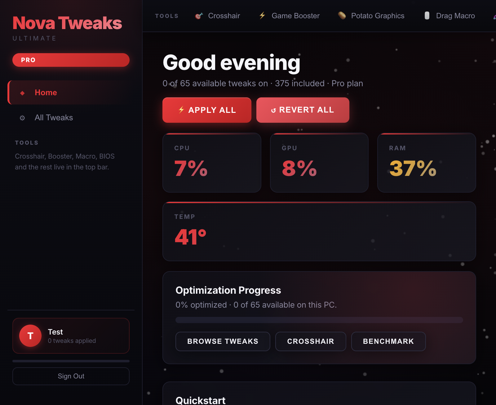

Nova Tweaks (Fortnite) — Windows
Separate Windows app for Fortnite. Same Nova Tweaks UI and Free / Pro / Ultimate tiers, focused on Fortnite performance tweaks.
Windows 10 / 11 · Separate appSeparate Nova Tweaks apps, each built for its game and platform: Fortnite (Windows), Minecraft (Windows), and Minecraft (macOS native app). Real reversible tweaks with the same clean UI and Free / Pro / Ultimate tiers — no fake toggles, no log-only placeholders, no telemetry.

.exe release builds/download links, live checkout/payment/domain setup, bundling PowerShell 7 into the macOS app, and code signing/notarization.
Same clean Nova Tweaks UI and Free / Pro / Ultimate tiers. Each product is a separate app tuned for its game and operating system.
Separate Windows app for Fortnite. Same Nova Tweaks UI and Free / Pro / Ultimate tiers, focused on Fortnite performance tweaks.
Windows 10 / 11 · Separate appSeparate Windows app for Minecraft. Includes real Minecraft tweaks: options.txt performance settings, tiered JVM RAM/G1GC arguments, dedicated GPU preference, fullscreen optimizations, process priority, and Game Bar/capture controls — all reversible with backups.
Native macOS app for Minecraft (WKWebView + local engine, no localhost). Same Nova Tweaks UI and Free / Pro / Ultimate tiers with Minecraft-focused tweaks (options, launcher/JVM and safe backups where supported).
macOS · Native app · No localhostEvery tweak maps to a real registry key, service, power setting or game config file — with a restore path on disk.
Reduces mouse and keyboard processing delay at the OS level, then restores your old values on demand.
WindowsTunes adapter, TCP and DNS behavior to cut jitter. No VPN, no proxy, no traffic routing.
WindowsOne real performance pass: Game Mode, capture off, scheduling priority, game GPU preference, power plan and memory cleanup.
Pro · WindowsPick the product for your game/platform — no in-app game switch. Windows Minecraft includes options.txt, JVM/G1GC arguments, GPU preference, fullscreen optimizations, priority and Game Bar/capture tweaks; macOS Minecraft is a native app with Minecraft-focused file/JVM tweaks.
Windows + macOSReal ICMP samples with average ping, jitter and packet loss, plus a rolling chart. Badges and daily streaks track your real progress.
In-appFree, Pro and Ultimate. Sign in once, and the app unlocks the tweaks your plan covers.
In-appA real overlay for the styles you can actually use, with color and size controls. No game files touched.
WindowsConfigurable drag timing and hotkey, driven by the OS input stack rather than external macros.
WindowsCreate a Windows restore point before changes, and undo any tweak individually or by category.
Built inA shared core plus dedicated Fortnite and Minecraft tweaks. Each separate app shows the tweaks supported by its game and platform (Windows has the broadest system-level catalog; macOS Minecraft focuses on supported Minecraft/file/JVM tweaks).
Monthly plans, cancel by simply not renewing. Giveaway credit in your account can pay for a plan.
Giveaway codes add real balance to your Nova Tweaks account. Open the account page in the app, redeem the code once, and the credit sits next to your plan — ready to put toward Pro or Ultimate.
Codes are single-use per account and validated in the app. Balance is shown in dollars and applied at checkout. No card details are ever stored by Nova Tweaks.
Each game/platform is a separate Nova Tweaks app with the same clean UI and Free / Pro / Ultimate tiers. No game-switch setting inside the app — pick the product you need.
Windows version of Nova Tweaks for Fortnite: separate app focused on Fortnite performance tweaks (same UI and tiers).
Download for WindowsWindows version of Nova Tweaks for Minecraft: options.txt performance, JVM RAM/G1GC, GPU preference, fullscreen optimizations, priority, and Game Bar/capture controls (reversible).
Download for WindowsNative macOS app (WKWebView + local engine, no localhost) with Minecraft-focused tweaks and backups. Currently requires PowerShell 7 (pwsh).
Use the button above or the official GitHub release. Don’t run copies from mirror sites. Pick the separate app for your game/platform.
Windows: if SmartScreen appears, choose More info → Run anyway (builds may be unsigned). macOS: open the native app; if Gatekeeper blocks it, allow it in Privacy & Security. The macOS Minecraft app currently requires PowerShell 7 (pwsh) until bundled.
Sign in, review your tweaks, and create a restore point/backup before your first batch of changes. All tweaks are designed to be reversible.
pwsh); bundled runtime and signing/notarization are in progress. Checkout links/domain are configured when live — the app/site won’t pretend to charge you.
No. Nova Tweaks does not inject into Fortnite or Minecraft and does not touch anti-cheat. Depending on the product and platform, it changes supported operating-system settings (power plans, input, services, network) and/or documented game config files such as Minecraft options.txt and launcher profiles — with reversible backups.
Most system-level changes do. Windows requires elevation to edit machine-wide registry keys, services and power settings. The app never asks you to disable Defender or install a system extension.
The app is a PowerShell-based executable that edits registry and service state, so heuristic scanners treat it like a potentially unwanted tool. It isn’t code-signed yet. If it gets quarantined, restore it from Protection history, or submit it to Microsoft as a false positive. Code signing is the permanent fix and is planned, not required to run the app.
Free unlocks 30 core tweaks plus the restore point and the regular crosshair. Pro adds the ping stabilizer, input-delay tweaks, most network and power tweaks, all eight crosshairs and the drag macro. Ultimate unlocks the full 383-tweak catalog, including Potato Graphics, Minecraft G1GC JVM arguments and the advanced service tweaks.
Yes — each game/platform is its own Nova Tweaks app (no in-app game switch), with the same clean UI and Free / Pro / Ultimate tiers. Nova Tweaks (Fortnite) for Windows focuses on Fortnite performance tweaks. Nova Tweaks (Minecraft) for Windows is a separate Windows app with Minecraft-specific tweaks: options.txt performance settings, tiered JVM RAM/G1GC arguments, dedicated GPU preference, fullscreen optimizations, process priority, and Game Bar/capture controls (reversible, with backups). Nova Tweaks (Minecraft) for macOS is a native app (WKWebView + local engine, no localhost) with supported Minecraft file/JVM tweaks and backups.
We hand out single-use gift codes during streams and events. Redeem one in the app under Account → Redeem code and the value is added to your balance. Your balance can be applied toward Pro or Ultimate when checkout is live.
Yes. Card payments run through Stripe, and PayPal and Cash App are supported as separate checkout options. The buttons open the configured payment link; if a link isn’t configured yet, the site says checkout is launching soon instead of pretending to charge you.
No. Accounts, plans and tweak states live locally on your machine. The app has no telemetry endpoint and does not phone home. The honest tradeoff: plans and balance are local, so they don’t sync across devices unless you export and import your account.
Yes. Every tweak has a restore action, and categories have remove buttons. On Windows you can also create a System Restore point from inside the app before applying a batch.
Thirty tweaks are free forever, including the restore point. Upgrade only if you want the deeper network, input and graphics work.
$5.99 / month · cancel anytime